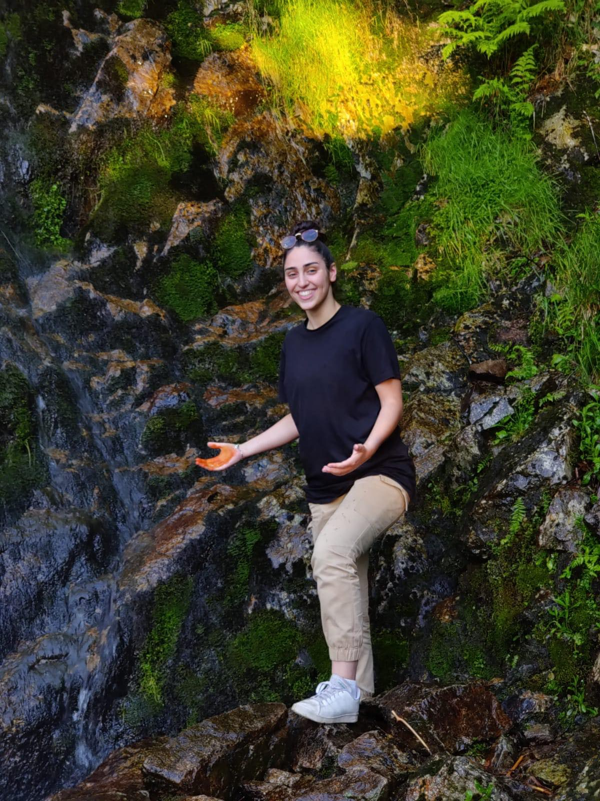

CV Loana Kerroua
Accueil :
CV
Expériences :
mon cv Expériences
Formations :
mon cv Formations

Chargée de communication
Lycée
Lycée Claude Lebois.
De 2015 à 2019.
42400 Saint-Chamond
Etudes supérieures
ISEG Lyon.
De 2019 à 2023. Apprentissage de la communication et du marketing.
69007 Lyon